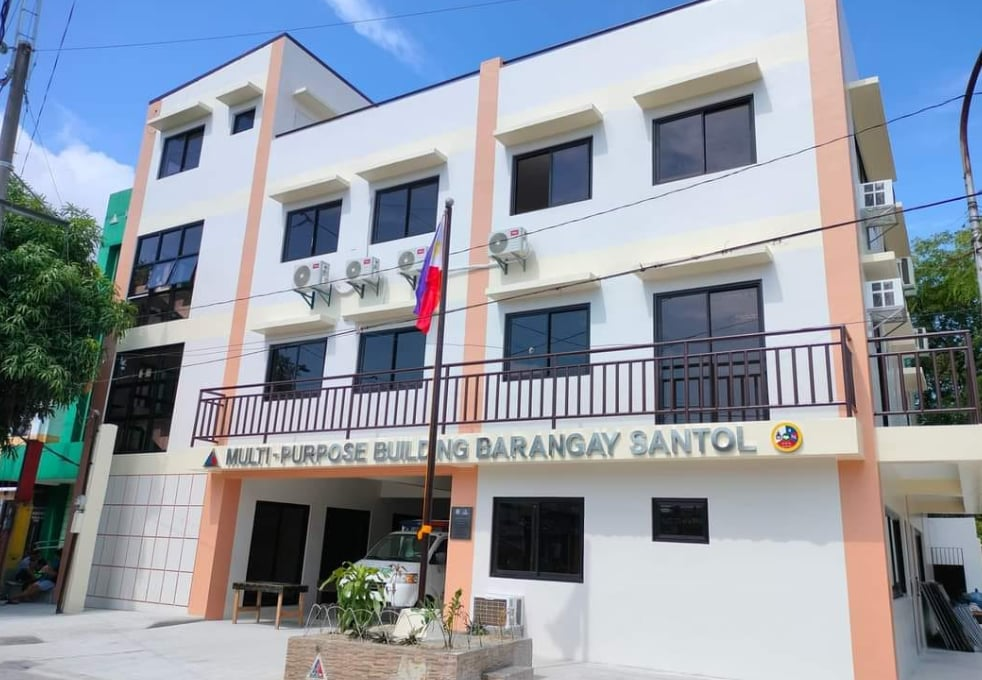
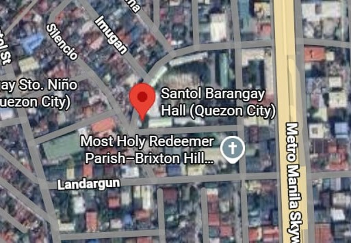
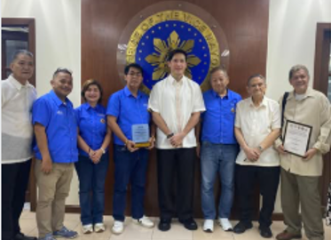

Barangay Vision
Barangay Santol is a progressive barangay with a high level of responsive government maintaining a progressive way of living and a secured community.

QUEZON CITY, DISTRICT IV

Barangay Santol is bounded on the north by Barangay Imelda, to the east by Barangay Imelda, to the southeast and southwest by part of Manila areas and to the west and northwest by Barangay Sto. Niño. Barangay Santol is one of the Seven (7) barangay's in Area 22, District 4, Quezon City. Its total land area is about 43.6847 hectares and it has 19 areas. Boundary: North: Bayani Steet Aurora Boulevard South: G. Araneta Avenue East : West : Santol Street and Quezon City, Boundary

Attended the flag ceremony at the Quezon City Hall where our barangay was recognized with a Plaque of Appreciation for our Anti-Drug efforts. Thank you very much honorable Mayor Joy Belmonte and Vice Mayor Gian Sotto for the recognition, and Station 11 Col. Dela Cruz. Your trust and appreciation truly inspire us to continue serving with dedication.

Leading our community with integrity, transparency, and dedication. Together, we continue to grow and protect our barangay for every family.
Jofre A. Doguran
Rosanna C. Progueras
Christine Jewel D. Dacillo
Barangay Santol is one of the 38 barangays in the fourth District of Quezon City,
Metro Manila. It has a total land area of 43.6847 hectares.
It was created in the late 1950s and was part of a vast tract of land allegedly
owned by the original residents (Araneta/Tuason) holding fortified Spanish titles.
In 1953, a portion of the area was named “Santol Bukid,” and its boundaries were
defined in the early 1960s as part of Galas, Quezon City.
In 1957, Tuason Estate administered by the Aranetas emerged as the landowner and
began subdividing the land and selling it to present residents. The court’s final
decision recognized this ownership up to the present time.
In 1958, Santol Bukid became “Araneta Subdivision.” In 1975, all barrios were
officially converted into barangays under Presidential Decree Nos. 86 and 210.
Barangay Santol is a progressive barangay with a high level of responsive government maintaining a progressive way of living and a secured community.
To ensure continuous interactions and participation among its inhabitants with smooth simplified procedures and systems towards social and prospective development of the Barangay Government.
To promote livelihood programs, job opportunities, social development, and healthcare services to ensure a safe, happy, and economically productive community.